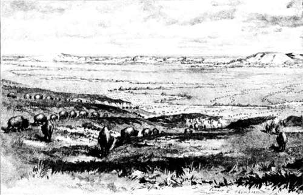

The Last Of The Buffalo. Part 8
Description
This section is from the book "Hunting", by Archibald Rogers. Also available from Amazon: Hunting.
The Last Of The Buffalo. Part 8
In the early days when the game was plenty, buffalo running was exhilarating sport. Given a good horse, the buffalo hunter's only other requisite to success was the ability to remain on its back till the end of the chase. No greater degree of skill was needed than this; and yet the quick motion of the horse, the rough ground to be traversed, and the feeling that there was something ahead that must be overtaken and stopped, made the ride attractive. There was the very slightest spice of danger; for while no one anticipated an accident, it was possible that one's horse might step into a badger hole, in which case his rider would get a fall that would make his bones ache.
The most exciting, and by far the most interesting, hunts in which I ever took part were those with the Indians of the plains. They were conducted almost noiselessly; and no ring of rifle-shot broke the stillness of the air, nor puff of smoke rose toward the still, gray autumn sky. The consummate grace and skill of the naked Indians, and the speed and quickness of their splendid ponies, were well displayed in such chases as these. More than one instance is recorded where an Indian has sent an arrow entirely through the bodies of two buffalo. Sometimes such a hunt was signalized by some feat of daring bravado that, save in the seeing, was scarcely credible, as when the Cheyenne Big Ribs rode his horse close up to the side of a huge bull, and, springing on his back, rode the savage beast for some distance, and then with his knife gave it its death-stroke. Or a man might find himself in a position of comical danger, as did "The Trader" who was thrown from his horse on to the horns of a bull without being injured. One of the horns passed under his belt and supported him, and at the same time prevented the bull from tossing him. In this way he was carried for some distance on the animal's head, when the belt gave way and he fell to the ground unhurt, while the bull ran on. There were occasions when buffalo or horses fell in front of horsemen riding at full run, and when a fall was avoided only by leaping one's horse over the fallen animal. In the buffalo chase of old days it was well for a man to keep his wits about him; for, though he might run buffalo a thousand times without accident, the moment might come when only instant action would save him his life, or at least an ugly hurt.
In the early days of the first Pacific Railroad, and before the herds had been driven back from the track, singular hunting parties were sometimes seen on the buffalo range. These hunters were capitalists connected with the newly constructed roads; and some of them now for the first time bestrode a horse, while few had ever used fire-arms. On such a hunt, one well-known railroad director, eager to kill a buffalo, declined to trust himself on horseback, preferring to bounce over the rough prairie in an ambulance driven by an alarmed soldier, who gave less attention to the mules he was guiding than to the loaded and cocked pistol which his excited passenger was brandishing.
Going to Water
It was on the plains of Montana, in the days when buffalo were still abundant, that I had one of my last buffalo hunts — a hunt with a serious purpose. A company of fifty or more men, who for weeks had been living on bacon and beans, longed for the "boss ribs" of fat cow; and when we struck the buffalo range two of us were deputed to kill some meat. My companion was an old prairie man of great experience, and I myself was not altogether new to the West; for I had hunted in many territories, and had more than once been "jumped" by hostile Indians. Our horses were not buffalo runners, yet we felt a certain confidence that if we could find a bunch and get a good start on them, we would bring in the desired meat. The troops would march during the day; for the commanding officer had no notion of waiting in camp merely for fresh meat, and we were to go out, hunt, and overtake the command at their night's camp.
The next day after we had reached the buffalo range we started out long before the eastern sky was gray, and were soon riding off over the chilly prairie. The trail which the command was to follow ran a little north of east; and we kept to the south and away from it, believing that in this direction we would find the game, and that if we started them they would run north or northwest, against the wind, so that we could kill them near the trail. Until some time after the sun had risen we saw nothing larger than antelope; but at length, from the top of a high hill, we could see far away to the east dark dots on the prairie, which we knew could only be buffalo. They were undisturbed too; for, though we watched them for some time, we could detect no motion in their ranks.
It took us nearly two hours to reach the low, broken buttes on the north side of which the buffalo were; and, riding up on the easternmost of these, we tried to locate our game more exactly. It was important to get as close as possible before starting them, so that our first rush might carry us into the midst of them. Know-the capabilities of our horses, which were thin from long travel, we felt sure that if the buffalo should take the alarm before we were close to them, we could not overtake the cows and young animals which always run in the van, and should have to content ourselves with old bulls. On the other hand, if we could dash in among them during the first hundred yards of the race, we should be able to keep up with and select the fattest animals in the herd.
When we reached a point just below the crest of the hill, I stopped and waited, while Charley, my companion, rode on. Just before he got to the top he too halted, then took off his hat and peered over the ridge, examining so much of the prairie beyond as was now visible to him. His inspection was careful and thorough; and when he had made sure that nothing was in sight, his horse took a step or two forward and then stopped again, and the rider scanned every foot of country before him. The horse, trained as the real hunter's horse is always trained, understood what was required of him, and with pricked ears examined the prairie beyond with as much interest as did his rider. When the calf of Charley's right leg pressed the horse's side, two or three steps more were taken, and then a lifting of the bridle hand caused another halt.
Continue to: